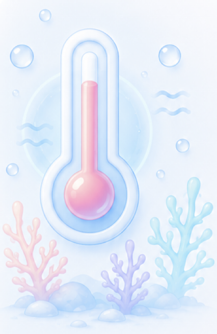
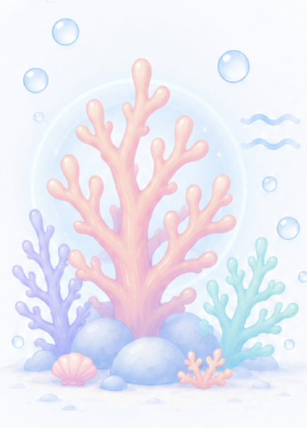
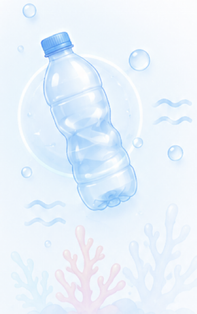
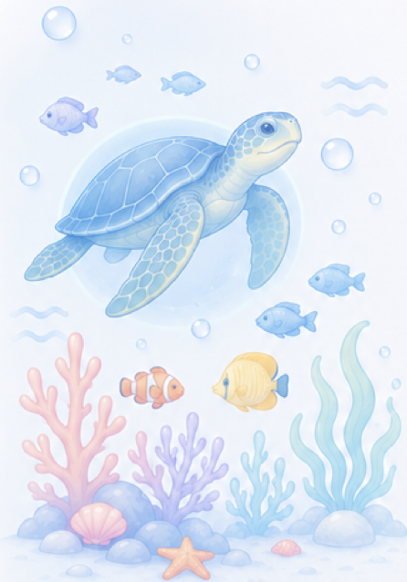
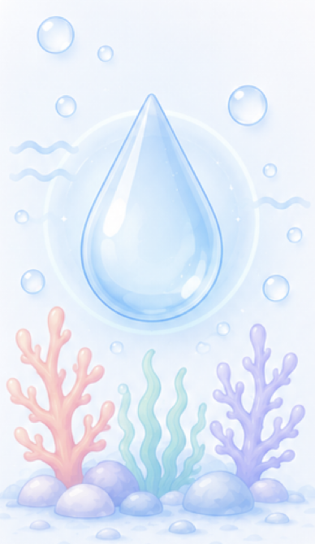
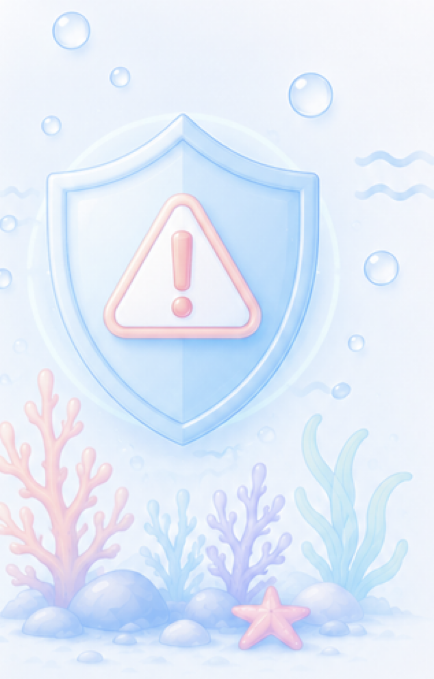

Intelligent Insights. that run |
Littora is your window to the ocean.
Monitor marine life, assess coastal risks,
and protect our blue planet.
Ocean Health Overview
Live readings streamed from our global sensor network, refreshed continuously.

Ocean Temp.

Coral Health

Plastic Density

Marine Biodiversity

Water Quality

Risk Index
How Littora Works
From raw signal to real-world action, in three steps
Sensors & Satellites
A global mesh of buoys, satellite feeds, and coastal sensors capture temperature, chemistry, and motion data every minute.
AI Analysis
Our models cross-reference live signals against historical baselines to detect anomalies, risks, and emerging patterns in real time.
Actionable Alerts
Researchers, NGOs, and coastal authorities receive prioritized alerts they can act on, from bleaching events to pollution spikes.
Live Alerts Feed
Real-time events surfaced by the sensor network, moment to moment
This Month's Deep Dive: Coral Bleaching in the Pacific
New satellite thermal data reveals a sharp rise in bleaching-risk zones across the Central Pacific. We break down what's driving it, which reefs are most exposed, and what recovery could look like over the next bloom cycle.
Trusted by Researchers Worldwide
Marine biologists, NGOs, and coastal agencies rely on Littora every day
Littora's alerts caught a thermal spike three days before our own instruments flagged it. It's changed how fast our response team can move.
We plugged Littora's feed straight into our field reports. What used to take our analysts a full day now takes an hour.
The species tracking layer is the closest thing we've found to a shared source of truth across three different research vessels.
Explore Marine Life
Discover amazing species and their habitats
Pollution Watch
Track pollution hotspots and take action
AI Ocean Oracle
AI-powered insights for a better tomorrow
Join the Tide
Get monthly ocean intelligence briefings, new deep-dive reports, and early access to alerts — straight to your inbox.
No spam. Unsubscribe anytime. ~2 emails a month.
Frequently Asked Questions
Straight answers on data, accuracy, and how Littora works under the hood
Where does Littora's data come from?
We combine a global mesh of coastal sensor buoys, partner satellite feeds, and public oceanographic datasets from research institutions, then cross-validate every reading before it reaches the dashboard.
How often is the data updated?
Sensor and satellite readings refresh every 60 seconds on average. AI-detected alerts, like bleaching or pollution events, are pushed to partners within minutes of being flagged.
How accurate are the AI-generated alerts?
Our models are trained against a decade of validated historical baselines and are continuously re-checked by partner researchers, keeping false-positive rates low without slowing down real-time detection.
Can my organization get access to the raw data?
Yes. Research institutions, NGOs, and coastal authorities can request partner-tier API access, which includes raw sensor exports, historical archives, and custom alert thresholds.
Is Littora free to use?
The public dashboard, live map, and alerts feed are free for anyone to explore. Partner-tier data access and custom integrations are available for research and conservation organizations.